비서-1급 (2013-05-26 기출문제)
1과목: 비서실무
1. 하늘기업의 손미진 비서는 상사인 김태진 사장의 자서전 출판기념회를 준비하고 있다. 손 비서의 행사준비 방법으로 가장 적절치 않은 것은?
- 출판기념회 축사를 해주실 특별 손님을 미리 섭외한다.
- 사장님은 행사 시작 전까지 사모님과 함께 행사장 입구에서 손님을 맞이하시도록 준비한다.
- 리시빙 라인(receiving line)의 위치는 문 밖에서 보아 오른쪽에 위치하도록 한다.
- 출판기념회장의 좌석은 연회형으로 배치하였고, 주빈석은 좌석마다 명패를 미리 준비한다.
(정답률: 57%)

2. 다음은 사내 임직원을 위하여 호텔과 숙박료 할인을 위한 업무협약을 맺는데 필요한 기초 자료를 취합하고자 오피스 매니저 최수영이 준비하고 있는 내용이다. 중요도가 가장 낮은 것은?
- 사내 임직원이 작년에 투숙한 호텔과 숙박일수를 확인하여 소속 기업의 객실료 규모성과 객실 할인율의 적절성을 살펴본다.
- 자사 해외 지사에서 업무협약을 맺고 있는 호텔 협약서를 취합하여 내용을 분석하고 활용할 요소가 있는지 살펴본다.
- 대표이사의 호텔 선호도를 우선 고려하여 대표이사의 인맥을 통해 추진하도록 한다.
- 타기업의 호텔 협약서 사본을 구하여 가격을 비교해 보고 유사한 가격경쟁력을 호텔 측에 요구하도록 한다.
(정답률: 75%)
3. 해외 출장을 마친 김사장에게 출장 기간에 발생한 전화메모 내용을 보고하려 한다. 다음 중 다량의 전화메모를 보고하는방법으로 가장 적절한 것은?
- 상사 출장 직후 수신일자별로 정리하여 가장 오래된 내용부터 구두 보고하도록 한다.
- 상사 출장 중에도 매일 보고를 통하여 전화메모내용을 알리고, 출장 직후 문서로 정리한 내용을 출력하여 전달한다.
- 전화수신일자보다는 전화메모내용의 중요도에 따라 분류하여 중요도가 높은 것부터 차례대로 구두 보고한다.
- 상사 출장 중 매일 보고를 통하여 이미 보고 드린 경우 굳이 반복된 업무내용 보고를 할 필요는 없다.
(정답률: 60%)
4. 상사가 해외 출장 시 이용할 차량을 온라인으로 직접 예약하려고 한다. 비서가 예약하는 과정에서 확인하여야 할 정보의 내용으로 짝지어진 것 중 중요도가 가장 낮은 것은?
- 지불조건 – 임차지역
- 주행거리 제한여부 - 차량모델
- 연소 운전자 보상 범위 – 운전기사 포함 임차여부
- 차량 인수 및 반환 시각 – 비용에 포함되어 있는 보험의 내용
(정답률: 52%)
5. 대한증권의 김주황 전무는 2013년 상반기 주식시장 전망에 관해 신문 및 방송 기자 20명을 대상으로 조찬회를 갖고자 한다. 조찬회를 준비하기 위한 김영희 비서의 업무처리 방법으로 가장 적절한 것은?
- 조찬회에서 발표할 주식시장 전망자료를 기자들에게 e-mail로 3일 전에 모두 발송하였다.
- 조찬회가 오전 8시에 시작하므로 참석자들에게 리마인드(remind)용 단체문자를 시작 20분 전에 통보하였다.
- 참석자의 명찰은 미리 준비하여 조찬회 입구에 직급순으로 정리해두었다.
- 스크린이 잘 보이도록 하기 위하여 조찬회 좌석을 ㄷ자형으로 배치하도록 하였다.
(정답률: 37%)
6. 내방객이 다음과 같이 항공권의 변경을 비서에게 부탁하였다. 이에 대한 설명으로 틀린 것은?(6번 공통지문 문제)
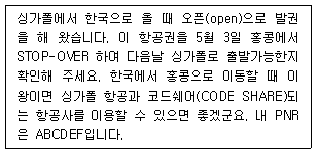
- 오픈(open) 발권 –출발일만 지정하고 귀국일을 지정하지 않은 항공권
- 코드쉐어(CODE SHARE) - 특정 노선을 취항하는 항공사가 좌석 일부를 다른 항공사와 나누어 운항하는 공동운항 서비스
- Stop-over –목적지까지 이동하는 과정에서 중간 기착지에 머무는 시간이 24시간 이상인 체류의 의미
- PNR –항공사에 등록된 개인 멤버쉽 번호를 의미
(정답률: 42%)
7. 회의용어의 한자어 설명이 바르게 설명된 것끼리 짝지어진 것은?
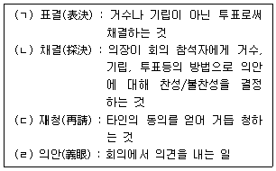
- (ㄴ) - (ㄷ)
- (ㄱ) - (ㄷ)
- (ㄴ) - (ㄹ)
- (ㄱ) - (ㄴ)
(정답률: 27%)
8. 김비서가 4명의 신입비서에게 회사개요 및 상사 보좌 방법에 대해 교육을 진행할 때 적절한 회의 형태 및 회의실 환경에 대한 설명으로 가장 적절한 것은?(9번 공통지문 문제)
- 회의의 형식으로 세미나가 적절하다.
- 회의실은 상사가 자주 사용하는 대회의실을 이용하도록 한다.
- 회의실 좌석배치는 ㅁ자형을 선택하여 참여자가 서로 마주보고 앉을 수 있도록 한다.
- 신입비서들이 서로 이름과 소속을 쉽게 인식할 수 있도록 회의실 탁자 위에 명패를 비치해 둔다.
(정답률: 49%)
9. 다음 중 김미영씨의 경조사 업무 처리 방식으로 가장 적절하지 않은 것은?
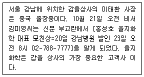
- 회사의 경조규정을 확인하여, 회사 경조사 경비로 처리할 수 있는 금액을 확인하였다.
- 상사와 연락이 되지 않아, 상사의 업무 대리자와 의논하였다.
- 우체국의 경조금 배달 서비스를 이용하여 조의금을 보냈다.
- 회사명과 대표이사 명의의 조화를 주문하여 보내드렸다.
(정답률: 57%)
10. 비서의 스트레스 대처 자세로 가장 부적절한 것은?
- 내 역량보다 높은 수준의 업무를 부여받은 경우에는 솔직하게 자신의 수준을 인정하고 다른 사람에게 위임한다.
- 일이 지나치게 많을 때는 업무 위임여부를 상사와 의논해 본다.
- 스트레스 해소를 위해 활동적인 스포츠나 취미를 개발하여 긴장의 이완을 위해 노력한다.
- 새로 입사한 동료가 비서보다 나이가 많지만, 개인적 감정과 사내 직위에 따른 상하관계를 분리하여 객관적으로 행동하고자 노력한다.
(정답률: 57%)
11. 계약서 초안 검토 후 중요한 문구수정을 요구하기 위해 호텔 담당자에게 오전 9시 30분경 호텔 사무실로 전화통화를 시도하였으나 담당자는 인도출장 중이다. 이에 대한 오피스매니저인 최수영의 대처로 가장 바람직한 것은?
- 계약건이니 만큼 담당자의 휴대전화로 곧바로 연락하여 직접 통화를 시도한다.
- 호텔 사무실 음성메시지에 전화통화를 요청하는 내용을 저장해 놓는다.
- 호텔 직원에게 상황 설명 후 전화메모전달 및 통화가능 시간대를 언급하며 회신을 요청해 놓는다.
- 호텔을 통해 인도 체류지를 확인하여 그쪽으로 계약서 원본과 수정사항을 표기한 내용을 팩스 전송 후 회신을 기다린다.
(정답률: 63%)
12. 다음은 두 달 전 가나물산에 입사한 송윤지 신입비서가 오늘 오전 겪은 상황을 나타낸 것이다. 아래의 상황을 대처하는 송 비서의 태도로 가장 적절한 것은 무엇인가?
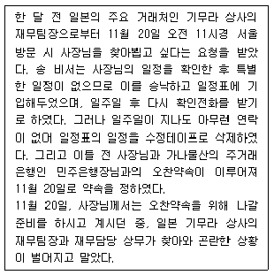
- 상사가 민주은행장과의 약속을 진행할 수 있도록 해외영업담당 상무님께 상황을 말씀드리고 대신 만나줄 것을 요청한다.
- 민주은행장 비서실에 전화하여 죄송하지만 오늘 오찬 약속은 취소하고 다음 약속을 잡을 수 있도록 양해를 구한다.
- 기무라 상사 재무팀장에게 확인전화가 없어 약속이 안된걸로 알았다고 비서의 실수를 인정하면서 죄송하다고 말씀드린다.
- 민주은행장과의 약속시간에 늦지 않게 출발하기 위해서 약간의 시간이 있으므로 상사께 상황을 말씀드려 기무라 상사 방문자와 면담을 가지시도록 한다.
(정답률: 33%)
13. 김형철 사장의 출장경비를 준비하는 신미나 비서의 업무처리 방법으로 가장 적절치 않은 것은?(15번 공통지문 문제)
- 유럽지역으로의 출장 일정이므로 유로화로 고액권과 소액권을 섞어 환전하였다.
- 신용카드는 법인카드를 사용하되, 해외사용한도액이 충분한지 미리 확인하였다.
- 분실 또는 도난에 비교적 안전한 여행자수표로 준비하였다.
- 12월 10일(월요일) 오전의 환율을 적용하여 출장비를 외국환으로 환전하였다.
(정답률: 37%)
14. 김형철 사장님은 귀국 후 바로 자택으로 귀가한 후 12월 17일 오전 경제인협회 조찬모임에 참석한 후 출근할 예정이다. 신 비서가 상사의 업무를 보좌하는 방법으로 가장 적절치 않은 것은?(15번 공통지문 문제)
- 12월 17일 일일 일정표를 작성하여 상사의 e-mail로 전송한다.
- 상사 부재중 우편물과 업무자료는 중요 사안에 관한 서류, 일반 문서 및 참고사항, 잡지 및 기타 간행물로 분류하여 모두 상사 자택으로 보내둔다.
- 상사 부재 시 중요 전화나 내방객 명단 목록을 정리하여 차량 기사 편에 전달하도록 한다.
- 상사의 업무 대행자가 처리한 일은 처리결과를 함께 서류철에 정리하되, 사무실에 출근하신 후 보고 드린다.
(정답률: 50%)
15. 첫 번째 업체와의 인터뷰가 예정보다 30분이 지나가고 있다. 이러한 상황에 대응하는 비서의 태도로 가장 적절한 것은?(18번 공통지문 문제)
- 예정된 인터뷰가 계속 기다리고 있음을 상기시켜 드릴 수 있도록 상사에게 메모를 넣는다.
- 사정이 있기 때문에 지체되더라도 인터뷰를 방해하지 않는 것이 바람직하다.
- 예정시간이 다 되었음을 인터폰을 통해 알려드린다.
- 사장실로 들어가서 손님이 기다리고 계심을 말씀드린다.
(정답률: 64%)
16. 김 비서는 상사의 지시로 신차발표회에 참석한 해외 거래처 외국인 참석자들을 위한 1-Day 서울 시내 관광 일정을 계획하고 있다. 일정 계획 시 고려해야 할 사항으로 가장 적절한 것은?
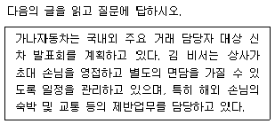
- 참석자들의 문화적 기호가 다양하기 때문에 상사가 선호하는 일반화된 주요 관광명소 위주로 프로그램을 준비한다.
- 쇼핑장소는 일정에서 제외하되, 기념품 구입을 희망하는 참석자들을 위해 일정 이후 별도의 차량과 안내자를 제공하도록 한다.
- 관광 안내자 및 전문 통역사를 섭외한 경우라도 비서는 꼭 동행해야 한다.
- 식사 장소 선택 시 외국인임을 고려하여 가장 한국적인 장소와 식단으로 결정한다.
(정답률: 49%)
2과목: 경영일반
17. 기업은 경영정보시스템을 활용하여 보다 효과적인 경영활 동을 수행할 수 있다. 다음 중 경영정보시스템의 활용에 관한 설명으로 가장 적절하지 않은 것은?
- CRM(Customer Relationship Management)은 고객의 내·외부 자료를 분석·통합한다는 점에서 데이터베이스 마케팅의 성격을 띤다.
- SCM(Supply Chain Management)은 수직계열화와 유사한 개념으로 기업 내부의 각 부문을 하나의 사슬로 연결하여 통합적으로 관리하는 것이다.
- ERP(Enterprise Resources Planning)는 기업 전체를 경영자원의 효과적 이용이라는 관점에서 통합적으로 관리하고 경영의 효율화를 기하기 위한 수단이다.
- 성공적 CRM을 위해서는 고객과의 접점인 웹사이트와 내부의 ERP가 통합되어 정보교환이 원활해야 한다.
(정답률: 36%)
18. 일반적으로 증권투자를 할 때 투자자가 고려해야 할 사항 과 가장 거리가 먼 것은?
- 투자 위험 : 투자의 현재가치보다 미래가치가 떨어질 수 있는 위험
- 수익률 : 보통 1년 동안 이자나 배당금과 같은 투자대상의 기대수익률
- 유동성 : 필요시 투자자금을 얼마나 빨리 회수할 수 있는 정도
- 가치보존성 : 증권의 가치변화 정도
(정답률: 34%)
19. 금융시장의 안정화를 위해 최근 각국이 적정수준에서 규제하는 조치중 하나로 '보유하지 않은 주식을 빌려 미리 판 다음 판매가격보다 싼 값에 해당 주식을 되사서 차익을 챙기는 매매기법'에 해당되는 용어로 다음 중 가장 적절한 것은?
- 매칭펀드
- 주식공매도
- 해지펀드
- 옵션거래
(정답률: 48%)
20. 다음 중 기업의 인수 및 합병에 관한 설명으로 가장 적절한 것은?
- 기업이 인수 합병 전략을 사용하여 신규진출 하는 경우 진입장벽은 보다 쉽게 넘을 수 있으나 기존 경쟁사와의 마찰은 더욱 심화될 수 있다.
- 혼합합병은 경쟁관계가 있는 두 산업 내 기업 간의 합병으로 이는 제품군을 다각화하고 확장하는 데 목적을 둔다.
- 기업들이 인수 합병 전략을 선택하는 동기에는 규모의 경제 확보, 조세절감, 자금조달 능력의 확대 등이 있다.
- 합병은 한 기업이 다른 기업의 경영권을 매입하는 것으로 기업매수 또는 주식취득에 의한 사업결합을 의미한다.
(정답률: 41%)
21. 다음 중 제품수명주기에 관련된 설명으로 가장 적절한 것은?
- 제품수명주기는 신제품의 개발단계에서부터 시장 도입 후 시간경과에 따른 매출액 수준을 나타낸다.
- 제품수명주기의 성숙기는 자사 제품의 경쟁우위 관리가 주목적이므로 이익극대화보다는 차별화된 비용투자가 지속적으로 필요한 시기이다.
- 산업별 제품수명주기는 기술혁신과 기술개발의 가속화로 그 주기가 점점 길어지고 있다.
- 제품수명주기의 성숙기에는 경쟁이 치열하여 가격이 떨어지며 판매촉진을 위한 여러 가지 조치가 취해진다.
(정답률: 20%)
22. 다음 중 경영자에 대한 설명으로 가장 적절하지 않은 것은?
- 경영자는 조직의 목표를 효과적으로 달성하기 위해 조직을 이끌고 그 결과에 책임을 지는 사람을 말한다.
- 경영자는 인간관계역할, 정보관리역할, 의사결정역할을 수행한다.
- 경영자는 계층에 따라 소유경영자, 고용경영자, 전문경영자로 구분된다.
- 주인-대리인 문제는 주인인 주주가 직접 일을 할 수 없는 상황에서 대리인인 전문경영자에게 경영활동을 위임 할 경우, 주인과 대리인이 다른 개인적 목표를 갖게 되어 주주의 의사대로 일을 수행하지 않는 문제이다.
(정답률: 24%)
23. 다음의 기업환경에 대한 설명으로 가장 적절하지 않은 것은?
- 사회적 환경은 사회구성원들이 행동하고 생각하며 원하고 믿는 것 등과 관련된 일반 환경으로, 여기에는 사회의 제 규범 및 가치관, 선악에 대한 판단근거, 관습 및 관행 등이 포함된다.
- 기술적 환경은 재화 및 서비스 생산과 관련되는 지식의 상태를 반영하는 것으로, 기업경영에 영향을 미치는 국가 또는 산업의 기술수준을 지칭한다.
- 경제적 환경은 주주, 정부, 종업원과 노동조합, 서비스제공자, 공급자, 경쟁기업, 금융업자, 고객 등이 있는데, 이들을 기업의 의사결정에 간접적인 영향을 미치고 있는 이해관계자집단이라고 한다.
- 정치적 환경은 법률과 공공정책이 형성되는 과정에 영향을 미치는 정치집단 및 이해관계자집단을 지칭하는데, 기업경영과 관련된 여러 이해관계자집단들 간의 갈등을 정치적으로 해결해야 할 필요성 때문에 기업행동의 큰 테두리를 설정한다.
(정답률: 39%)
24. 다음 중 커뮤니케이션에 대한 설명으로 가장 적절하지 않은 것은?
- 공식적인 커뮤니케이션은 조직의 권한체계나 공식적인 구조에 따라 구성원 간에 이루어지는 커뮤니케이션이다.
- 공식적인 관계를 중심으로 정보교환을 하는 커뮤니케이션의 예로는 그레이프바인(Grapevine)이 있다.
- 비공식 커뮤니케이션이 이루어지는 조직은 자연발생적이 고 자의적으로 발생한다.
- 비공식적 커뮤니케이션이 이루어지는 조직은 감정과 인간적 관계가 중요시된다.
(정답률: 44%)
25. 다음 중 프로젝트조직과 매트릭스조직에 대한 설명으로 가장 적절한 것은?
- 기능조직에 비하여 안정적으로 운영된다.
- 제품, 지역, 고객관리에 필요한 인적자원 사용이 비탄력적인 모델이다.
- 프로젝트조직은 과업이 진행됨에 따라 필요한 인원을 모으고, 프로젝트가 완료되면 해산되는 탄력적인 조직구조이다.
- 매트릭스조직은 전통적 조직화의 원리에 의한 조직구조로서 명령일원화의 원칙에 입각한 조직이다.
(정답률: 50%)
26. 다음 중 개인기업의 한계를 극복하기 위해 등장한 공동기업에 대한 설명으로 가장 적절하지 않은 것은?
- 합명회사는 2인 이상이 공동으로 출자하고 회사의 채무에 대해서 유한책임을 지면서 직접 회사경영에 참여한다.
- 합자회사는 무한책임을 지는 출자자와 유한책임을 지는 출자자로 구성되는 기업형태이다.
- 유한회사는 2인 이상 50명 이하의 유한책임사원으로 구성되며, 주식회사보다 설립절차가 간편하여 중소기업에 적합한 기업형태이다.
- 주식회사는 주식을 통해 자본이 조달되며, 자본의 증권화, 출자자의 유한책임제도, 소유와 경영의 분리라는 특징을 보유한다.
(정답률: 38%)
27. 다음 주식회사의 장점과 단점에 대한 설명으로 가장 적절하지 않은 것은?
- 주주는 회사에 대해 개인적으로 출자한 금액한도에서 책임이 부여되기 때문에 안심하고 기업에 출자할 수 있는 점이 장점이다.
- 주식이라는 유가증권을 통해 출자의 단위를 소액단위의 균일한 주식으로 세분하여 출자를 용이하게 하고 이를 주식시장에서 매매 가능하도록 하여 소유권 이전이 용이 한 것이 장점이다.
- 대규모의 자금조달과 기업성장이 상대적으로 어려운 단점이 있다.
- 회사의 설립이 상대적으로 복잡하고 비용이 많이 드는 단점이 있다.
(정답률: 42%)
28. 다음 중 벤처기업에게 필요한 외부자금을 제공하는 엔젤투자자에 대한 설명으로 가장 적절하지 않은 것은?
- 엔젤은 사업구상에서 초기 성장단계의 투자를 주로 한다.
- 엔젤의 주요 투자동기는 높은 수익성 추구이며 친분을 중시한다.
- 엔젤은 기업에 자금만 지원하는 형태로 경영자문 및 경영참여의 비중이 거의 없다.
- 엔젤은 주로 개인투자가로서 일정한 법적 자격요건을 필요로 하지 않는다.
(정답률: 27%)
29. 전략(strategy)이나 목표(goal)와 비교하여 조직의 사명(mission)에 대한 다음 설명 중 가장 적절하지 않은 것은?
- 조직이 원래 무엇을 하기로 되어 있는지를 간단하고 명확한 용어로 표현한 것이다.
- 환경과 자원의 변화를 반영하거나 새로운 기회를 활용하기 위해 정기적으로 재정립된다.
- 조직이 수행하는 업무에 대한 의미를 최고로 표현한 것이다.
- 조직의 모든 사람들이 힘을 합쳐서 해야 할 일, 즉, 공유된 목표를 제시한다.
(정답률: 40%)
30. 다음 중 상황이론적 관점에서 리더십 스타일을 찾아보려는 경로-목표이론에 대한 설명으로 가장 옳은 것은?
- 상황이 리더에게 매우 불리하거나 유리한 경우는 관계지향적 리더가 효과적이다.
- 집단의 성과가 최대가 되는 리더십 유형은 집단 과업 상황의 호의성에 따라 좌우된다.
- 부하의 성숙도를 고려하여 그에 적합한 리더십 유형의 개발을 강조한다.
- 동기부여 이론 중 기대이론과 높은 관련이 있다.
(정답률: 16%)
31. 다음 중 지식경영에 대한 설명으로 가장 적절하지 않은 것은?
- 지식경영이란 조직이 발달하면서 경쟁우위를 얻기 위해서 지식을 공유하는 과정을 말한다.
- 지식경영최고책임자(CKO: Chief Knowledge Officer)의 직위는 조직의 지적 자산의 포트폴리오와 지식의 전체풀을 잘 관리하고 지속해서 재생산하는 것이다.
- 지식경영의 핵심은 지식의 보안과 개인적 관리를 의미하는 것이며, 목적은 지식을 경영자원으로 활용하여 기업의 가치를 향상시키는 것이다.
- 지식경영이 성공하기 위해서는 지식공유 및 보상체계 등 지식경영을 조직문화로 정착시키는 것과 권한과 책임의 현장위임과 같은 조직구조를 갖추는 것이 필요하다.
(정답률: 25%)
32. 경영정보시스템의 하위시스템을 설명하는 다음 설명 중 가장 적절하지 않은 것은?
- 사무자동화시스템(OAS)은 정보기술이 사용된 사무기기를 이용하여 사무처리를 자동화한 시스템을 말한다.
- 의사결정지원시스템(DSS)은 최고경영자의 활동만을 지원하기 위해 개발된 시스템이다.
- 거래처리시스템(TPS)은 거래 데이터를 처리하기 위한 시스템이다.
- 회계정보시스템(AIS)은 이익, 자산 등 기업의 경제적 정보를 측정, 예측하기 위한 시스템이다.
(정답률: 54%)
33. 다음 중 인적자원관리와 관련된 조직의 여러 활동에 대한 설명으로 가장 적절하지 않은 것은?
- 직무평가는 개별 직무의 수행에 필요한 지식, 능력, 숙련등 여러 요건을 기초로 직무의 절대적 가치를 평가하는 체계적인 방법이다.
- 직무순환은 기능이나 작업조건, 책임 등이 현재까지 담당하던 직무와는 성격상 다른 직무로의 이동을 말한다.
- 보상관리는 조직 내 인적자원이 조직에 공헌한 만큼 금전적, 비금전적 대가를 제공하는 활동을 말한다.
- 노동조합은 조합원의 경제적, 사회적 지위향상을 위해 경제적 기능, 공제적 기능, 정치적 기능 등을 수행한다.
(정답률: 31%)
34. 글로벌 금융시장의 불안감 속에서 대기업들이 자금확보를 위해 회사채 발행을 늘려가고 있다. 다음 회사채에 대한 설명으로 가장 적절하지 않은 것은?
- 회사가 해산하고 남은 재산을 분배할 때 회사채의 채권자들은 소유주(주주)보다 우선권을 갖는다.
- 회사채는 주식회사가 투자자에게 사업자금을 장기간 빌리려고 발행하는 채권으로 일반적으로 금융채보다 금리가 높다는 이점이 있다.
- 회사채는 채권자의 권리를 기준으로 일반사채와 특수사채로 구분하고 특수사채에는 전환사채, 신주인수권부사채 등이 있다.
- 회사채 중 전환사채는 발행 시 주식으로 보유하지만 일정기간 내에 발행사의 채권으로 전환할 수 있는 청구권을 갖게 된다.
(정답률: 17%)
35. 다음 중 기업의 성장전략 중 수직적 통합전략에 대한 설명으로 가장 적절하지 않은 것은?
- 수직적 통합은 생산과정상 또는 유통경로 상에서 공급자나 수요자를 통합하는 전략을 말한다.
- 수직적 통합은 원가절감과 안정적 수요와 공급이 가능하다는 전략적 이점을 지니고 있다.
- 수직적 통합을 통해 기업은 환경변화에 대한 탄력적 대응이나 기술변화에 대한 민감한 반응이 가능하다.
- 자동차 회사가 부품공급업체를 수직 통합한다면 품질향상과 유지를 통해 제품차별화를 달성할 가능성이 높아질수 있다.
(정답률: 32%)
36. 다음의 e-비즈니스의 유형에 대한 설명 중 가장 적절하지 않은 것은?
- B2B(기업 간 거래) : 두 기업 간의 거래에서 발생하는 것으로 구매와 조달, 재고관리, 영업활동, 지출관리, 서비스와 지원에 인터넷을 활용하는 것이다.
- B2C(기업과 소비자간 거래) : 기업과 소비자 간의 거래를 말한다.
- C2C(소비자 간 거래) : 두 고객 간 혹은 고객들 사이에서 이루어지는 거래를 말한다. 판매자와 구매자가 직접거래를 할 수도 있지만, 경매사이트와 같은 제3자가 관련될 수도 있다.
- G2C(정부와 소비자 간 거래) : 일반기업과 정부 간에 이루어지는 사업 유형으로, 정부의 공공자원을 일반기업이 구매하거나 기업이 세금 납부를 전자적으로 하는 것이 해당한다.
(정답률: 46%)
3과목: 사무영어
37. Choose the most effective subject line that reflects the message below.
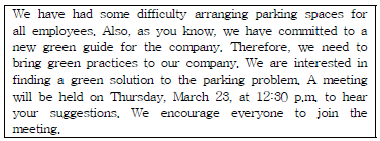
- We need your suggestions for parking problem
- Green practices to our company
- Difficulty of parking
- Encouraging all employees to arrange meetings
(정답률: 31%)
38. Read the passage below and fill in the blank with the most appropriate department name.
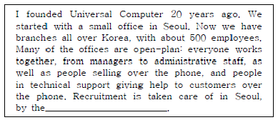
- general affairs department
- secretarial department
- human resources department
- public relations department
(정답률: 28%)
39. Look at the following passage and choose the most appropriate words for the blank ⓐ, ⓑ, and ⓒ. (순서대로 ⓐ, ⓑ, ⓒ)
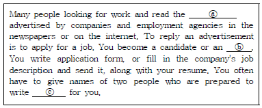
- job vacancies - applicant - references
- job promotions - applicant - cover letter
- job promotions - employee - references
- job vacancies - employee - cover letter
(정답률: 26%)
40. According to the dialogue, which of the following is NOT true?
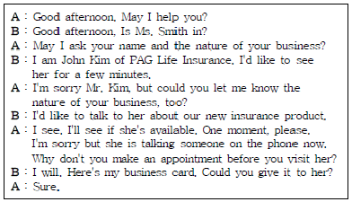
- John Kim visited Ms. Smith's office without an appointment.
- The purpose of John Kim's visit is to introduce the new insurance product of PAG.
- Ms. Smith is having conversation on the phone.
- John Kim informed Ms. Smith of his visit in advance.
(정답률: 40%)
41. Belows are sets of korean sentences translated into English. Choose the one which is NOT translated appropriately.
- In the past quarter our domestic sales have increased by 50% while our overseas sales by 19%. - 지난 분기 우리의 국내 판매는 50% 증가 하였고 반면 해외 판매는 19% 증가 하였습니다.
- I am wondering if I am able to postpone the meeting scheduled this Friday to next Friday. - 나는 당신이 이번 금요일로 예정된 회의를 다음 주 화요일로 왜 미루었는지 알고 싶습니다.
- If you have any further queries, please do not hesitate to contact me on my direct line. - 질문이 더 있으시면 주저하지 마시고 제 직통전화로 연락하십시오.
- Manual and service industry workers are often organized in labor unions. - 육체노동자들과 서비스 산업 종사자들은 종종 노동조합에 가입되어 있다.
(정답률: 35%)
42. According to the conversation, which of the following is true?
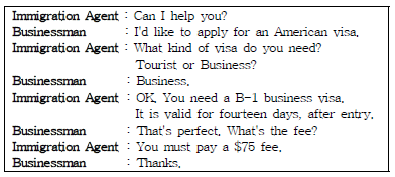
- The man is going on a family vacation.
- This conversation takes place at a travel agency.
- The man will be abroad for less than 14 days.
- He should pay a fee of sixty-five dollars for B-1 visa.
(정답률: 33%)
43. Read the following and choose the set which arranges the letter appropriately.
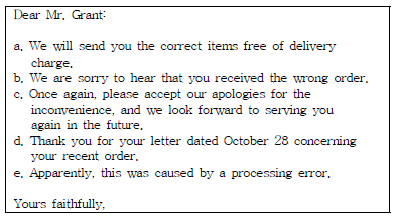
- c - e - a - d - b
- d - b - e - a - c
- b - c - a - e - d
- e - a - b - d - c
(정답률: 38%)
44. According to the following fax message, which is NOT true?
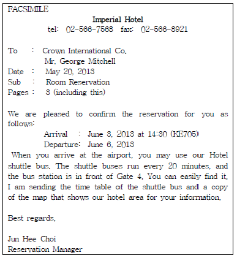
- Mr. Mitchell is supposed to stay in the Imperial Hotel.
- Ms. Choi attached a copy of the travel itinerary with this fax.
- Mr. Mitchell will check out June 6.
- The hotel runs shuttle buses every 20 minutes from the airport to the hotel.
(정답률: 38%)
45. Which of the following is the most appropriate expression for the blank?
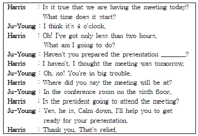
- budget
- materials
- agenda
- appointment
(정답률: 31%)
46. Which of the following is the most appropriate expression for the blank?
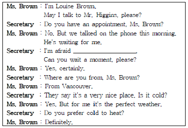
- He's on a business trip.
- His schedule is fully booked today.
- He's in a conference now and won't be back all morning.
- He's with a customer at the moment.
(정답률: 40%)
47. What is the purpose of the following letter?
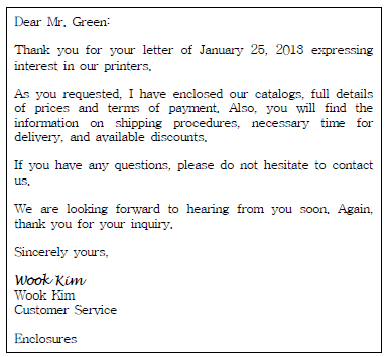
- to ask necessary information about the new printers
- to apologize Mr. Green for the late delivery
- to provide requested information
- to invite Mr. Green to show the new products
(정답률: 32%)
48. According to the following fax, which is true?
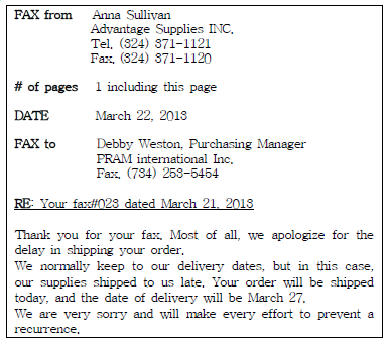
- The fax number of the recipient is 324 371 1120.
- This fax is a complaint about delayed delivery date of order.
- This is a reply to the fax that Debby sent to Anna on March. 21.
- The total pages of this fax is 2 including the cover.
(정답률: 20%)
49. According to the hotel bill, which of the following is NOT true?
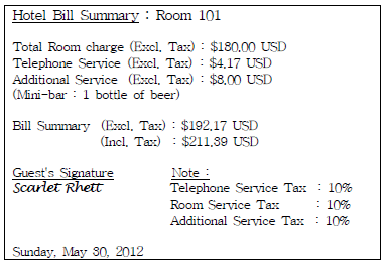
- The guest stayed at Room 101.
- The total hotel bill is $211.39 USD including tax.
- Scarlet Rhett issued the bill.
- The guest used something from the mini-bar in the room.
(정답률: 32%)
50. Which of the following is NOT true according to the following conversation?
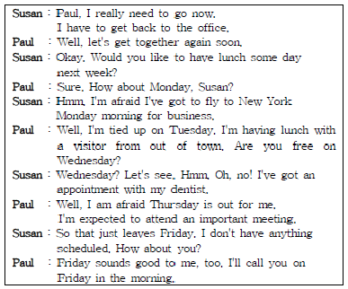
- Susan is going to see a dentist on Wednesday.
- Susan and Paul are going to have lunch together on Tuesday.
- Susan is supposed to leave for New York on Monday.
- Paul is scheduled to attend a meeting on Thursday.
(정답률: 43%)
51. According to the dialogue, which one is NOT true?
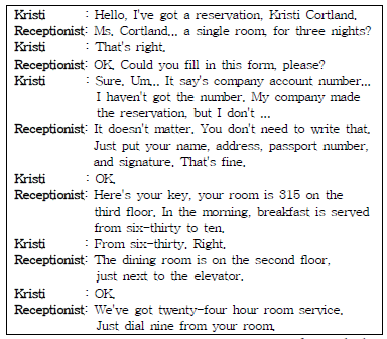
- This conversation takes place at the front desk of a hotel.
- Kristi Cortland made a reservation by herself just before coming here.
- Breakfast is served in a dining room from six-thirty to ten.
- Kristi can ask for a room service just by dialing 9 from her room.
(정답률: 35%)
52. Choose the correct inside address in a business letter.
- Mr. Jason Claus
Global Telcom
Sales & Marketing Director
11 Main Street
Grand Plains, NY 21596 - Sales & Marketing Director / Jason Claus
Global Telcom
11 Main Street
Grand Plains, NY 21596 - Dear Mr. Jason Claus
11 Main Street
Grand Plains, NY 21596
Global Telcom
Sales & Marketing Director - Mr. Jason Claus
Sales & Marketing Director
Global Telcom
11 Main Street
Grand Plains, NY 21596
(정답률: 38%)
53. Choose the one which can NOT replace the phrase underlined.(57번 공통지문 문제)
- owing to
- in connection with
- concerning
- regarding
(정답률: 25%)
54. Which of the following is the most appropriate for the blank ⓐ, ⓑ, ⓒ and ⓓ?
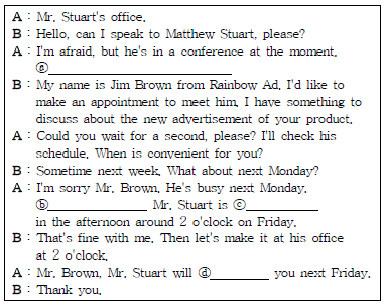
- ⓐ May I have your name, please?
ⓑ How about next Monday?
ⓒ comfortable
ⓓ wait - ⓐ How do you spell your name?
ⓑ How about next Friday?
ⓒ busy
ⓓ expect - ⓐ Can I ask who is calling, please?
ⓑ How about next Friday?
ⓒ free
ⓓ expect - ⓐ May I have your name, please?
ⓑ What about next Monday?
ⓒ busy
ⓓ call
(정답률: 41%)
55. Where can you find the following statement from?
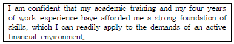
- a resume
- a cover letter
- a letter of credit
- a letter of recommendation
(정답률: 24%)
4과목: 사무정보관리
56. 회원관리를 위한 데이터베이스 사용 방법에 대한 설명 중 가장 적절하지 못한 것은?
- 테이블이란 액세스에서 데이터를 저장하고 관리하는 규칙과 형식을 제공하는 개체이다.
- 쿼리는 반복적인 작업을 자동으로 수행할 수 있도록 하는 기능을 제공하는 개체이다.
- 폼은 GUI 개념을 도입하여 결과물을 사용자가 사용하기 편하도록 비주얼하게 구성할 수 있도록 하는 개체이다.
- 페이지는 엑세스에 저장된 데이터를 웹페이지에서 볼 수 있도록 하는 개체이다.
(정답률: 30%)
57. 다음 중 라벨지 사용에 대한 설명으로 가장 옳지 않은 것은?
- 김비서는 입사직후 정식 명함이 나오기 전 라벨지를 이용하여 임시용 명함을 만들어 사용하였다.
- 이비서는 매월 개최되는 월례회의 녹화용 비디오테이프를 깔끔하게 정리하기 위해 라벨지를 사용하였다.
- 박비서는 다음달에 있을 제2공장 준공식 초청장을 라벨지를 이용하여 작성하였다.
- 권비서는 새로 출시한 제품의 판매를 위해 라벨지를 사용하여 바코드를 출력하였다.
(정답률: 36%)
58. 제품닷컴 회사는 아래와 같은 문제에 처해있다. 이 문제를 해결하기 위해 도입해야 할 것으로 가장 적당한 것은?
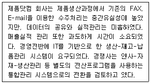
- ERP(Enterprise Resource Planning)
- EC(Electronic Commerce)
- SNS(Social Network Service)
- EDI(Electronic Data Interchange)
(정답률: 37%)
59. 다음은 지방섭취량과 혈중 납 관계 그래프이다. 이에 대한 설명으로 가장 적절하지 못한 것은?
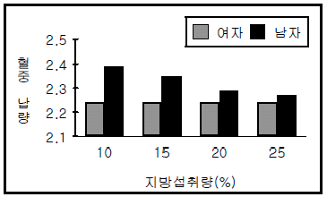
- 지방 섭취량과 혈중 납 농도는 반비례 관계이다.
- 남자의 경우 적절한 지방섭취는 혈액중의 납농도 감소에 영향을 준다.
- 여자는 지방의 적정 권장량을 먹는 사람(25％ 지방섭취량)이 10％정도로 적게 섭취하는 사람과 혈중 납이 비슷한 결과를 보인다.
- 남자는 지방의 적정 권장량을 먹는 사람(25％ 지방섭취량)이 10％정도로 적게 섭취하는 사람보다 혈중 납이 줄어드는 결과를 보인다.
(정답률: 39%)
60. 다음 중 밑줄 친 부분의 글쓰기 표현이 가장 올바르지 않은 경우는?
- 박비서는 그 일이 힘에 부친다.
- 힘든 업무를 처리함으로써 업무역량이 향상 된다.
- 비서로써 이런 업무처리는 있을 수 없는 일이다.
- 오늘 하든지 내일 하든지 마음대로 하십시오.
(정답률: 41%)
61. 지난 1주일간의 코스피 거래량을 비교하면서 거래대금의 변동 추세를 동시에 보여주는 그래프를 작성하고자 한다. 가장 적합한 그래프는?(66번 공통지문 문제)
- 누적 막대형 그래프
- 혼합형 그래프
- 세로 막대형 그래프
- 선형 그래프
(정답률: 38%)
62. 다음 중 적절하게 짝지어 지지 않은 것은?
- 클라우드서비스 - 드롭박스
- 소셜네트워크서비스 - 페이스타임
- 소셜네트워크서비스 - 트위터
- 클라우드서비스 - N드라이브
(정답률: 45%)
63. 김대리가 다니는 손해보험회사는 전국에 백만 명 정도의 고객을 확보하고 있다. 하루에도 몇 만 건씩 사건접수가 이루어지고 있어서 새 파일을 만들 때 무한정 확장할 수 있어야 한다. 또한 고객의 전화번호, 주민등록번호, 자동차번호 등의 고객의 개인정보는 철저히 보안유지가 되어야 한다. 이 사례에 가장 적절한 파일링 방법은?
- 사건의 종류별로 파일정리를 하고 있다.
- 고객의 주민등록번호로 파일정리를 하고 있다.
- 지역별 고객의 이름으로 파일정리를 하고 있다.
- 계약건별 보험증서번호로 파일정리를 하고 있다.
(정답률: 32%)
64. 한국산업은 네트워크상의 여러 서버에 분산되어 있는 모든 문서 자원을 발생부터 소멸까지 통합관리해주는 문서관리 시스템을 도입하였다. 이 문서관리시스템의 장점으로 가장 거리가 먼 것은?
- 결재과정의 불필요한 시간, 인력, 비용의 낭비를 줄인다.
- 문서의 검색이 신속하고 정확해진다.
- 결재문서를 불러서 재가공할 수 있어 기안작성의 효율을 도모한다.
- 지역적으로 떨어져 있는 경우 컴퓨터를 이용해서 원격전자 회의를 가능하게 한다.
(정답률: 42%)
65. 다음 중 사무기기의 올바른 사용 및 관리에 대한 설명으로 가장 적당하지 않은 것은?
- 최비서는 컴퓨터 하드디스크에 저장된 데이터가 손상되는 것에 대비하여 백업 파일을 해 두었다.
- 황비서는 문서 세단기를 사용하여 문서를 폐기할 때 항상 최대 세단 장수를 염두에 두고 기기를 사용 한다.
- 장비서는 회의용 자료를 동일한 크기로 통일시키기 위해 B4 크기의 원본 자료를 A4 크기로 확대하여 복사하였다.
- 강비서는 기밀이 유지되어야 하는 기획서를 제작하기 위해 문서 제본기를 사용하여 서류를 완성하였다.
(정답률: 33%)
66. 아래 설명에 대한 답이 가장 알맞게 짝지어진 것은?
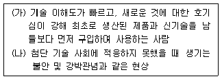
- (가) 얼리 유저 - (나) VDT 증후군
- (가) 얼리 유저 - (나) 테크노스트레스
- (가) 얼리 어댑터 - (나) 테크노스트레스
- (가) 얼리 어댑터 - (나) VDT 증후군
(정답률: 35%)
67. 직무전결규정상 전무이사가 전결인 '과장의 국내출장 건'의 결재를 시행하고자 한다. 박기수 전무이사가 해외출장으로 인해 부재중이여서 직무대행자인 최수영 상무이사가 결재하였다. 이와 관련하여 바르지 않은 것끼리 묶인 것은?
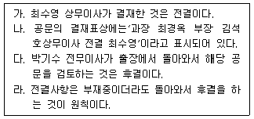
- 가, 나, 다
- 가, 나, 라
- 나, 다, 라
- 가, 나, 다, 라
(정답률: 25%)
68. 2012년 8월 18일 부로 시행된 정보통신망법 제 23조 2항의 '주민등록번호의 사용제한'에 따른 고객정보관리방법으로 가장 적당하지 않은 것은?
- 개인식별을 위해 사용해왔던 주민등록번호를 파기하고 핸드폰 번호로 대체한다.
- 고객에게 핸드폰번호, e-mail, 성명, 생년월일을 요청할 수 있다.
- 멤버십 카드번호와 주민등록번호는 개인식별정보로 사용 할 수 없다.
- 고객에게 ID나 I-pin을 요청할 수 있다.
(정답률: 29%)
69. 다음은 신문 기사의 일부이다. ( )에 공통적으로 들어갈 단어는?
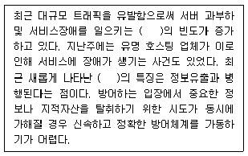
- 파밍
- 보이스피싱
- 스미싱
- 디도스 공격
(정답률: 43%)
70. 한비서는 업무상 이메일을 사용하고 있다. 다음 중 기능의 활용방법이 가장 적절하지 않은 것은?
- 메일을 받은 날짜순으로 정렬하기 위해 sorting 기능을 사용하였다.
- 스팸메일을 수신거부하기 위해 anti-spam 기능을 사용하였다.
- 수신하는 메일이 너무 많아서 여러 편지함에 메일을 분류하기 위해 filtering 기능을 사용하였다.
- 스마트폰에서 이메일을 확인하기 위해 forwarding 기능을 사용하였다.
(정답률: 39%)
71. 한국섬유에서 근무하고 있는 김비서가 상사의 지시에 따라 우편물을 보내기 위해 봉투를 작성하고 있다. 이 중 수신자에 대한 경칭이 가장 올바른 것은?
- 아이텍스쳐(주) 대표이사 김만수 귀하
- 아이텍스쳐(주) 김만수 사장님 귀하
- 아이텍스쳐(주) 대표이사 귀중
- 아이텍스쳐(주) 임직원 귀하
(정답률: 37%)
72. 다음 중 업무 관련 정보 수집을 위해 신문을 이용하는 비서의 행동에 대한 설명으로 가장 옳지 않은 것은?
- 장비서는 인물 동정란을 보고 상사 지인들의 승진, 영전, 부고를 찾아본다.
- 강비서는 효과적인 정보 수집을 위해 매일 모든 기사를 빠짐없이 꼼꼼히 읽는다.
- 남비서는 주요 기사를 놓치지 않기 위해 상사의 정보 요구에 적합한 2, 3종의 신문을 선별하여 조사한다.
- 최비서는 큰 제목을 기준으로 훑어보아 중요 기사를 파악한 후 관련 기사를 찾아 상세히 읽는다.
(정답률: 41%)
73. 프리젠테이션의 준비단계에서 3P분석을 한다. 이에 대한 설명으로 가장 적절하지 않은 것은?
- 3P는 목적분석, 장소분석, 청중분석을 의미한다.
- 청중의 관심을 유도하고 프리젠테이션의 구조와 내용을 결정한다.
- 청중의 목적과 프리젠터의 목적을 일치시키는 분석을 포함한다.
- 3P분석은 프리젠테이션의 내용보다 전달 스킬에 중점을 두는 분석이다.
(정답률: 40%)
74. 외국계 기업의 비서가 고객파일을 정리하고 있다. 알파벳순으로 정리할 경우 순서가 가장 적절한 것은?
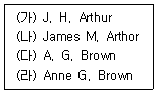
- (나) - (가) - (다) - (라)
- (나) - (가) - (라) - (다)
- (다) - (라) - (가) - (나)
- (라) - (다) - (나) - (가)
(정답률: 29%)